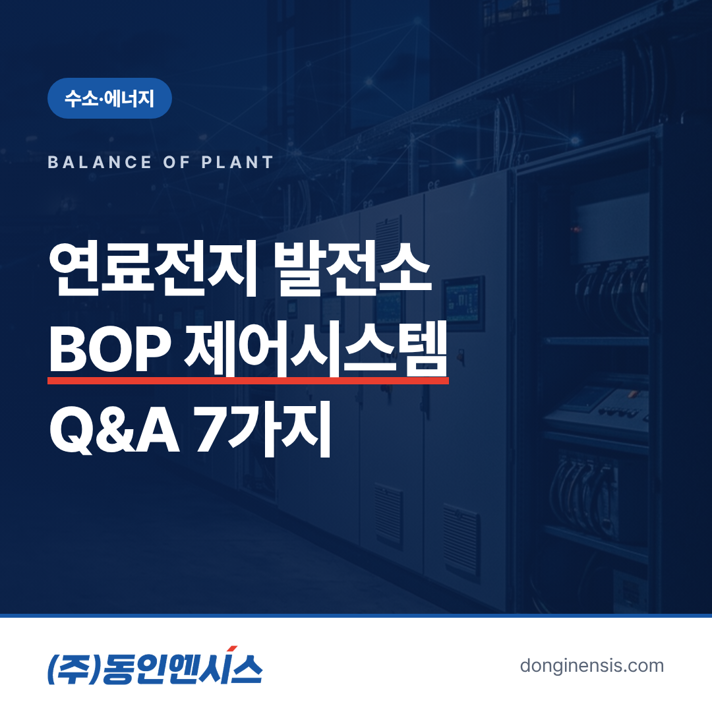
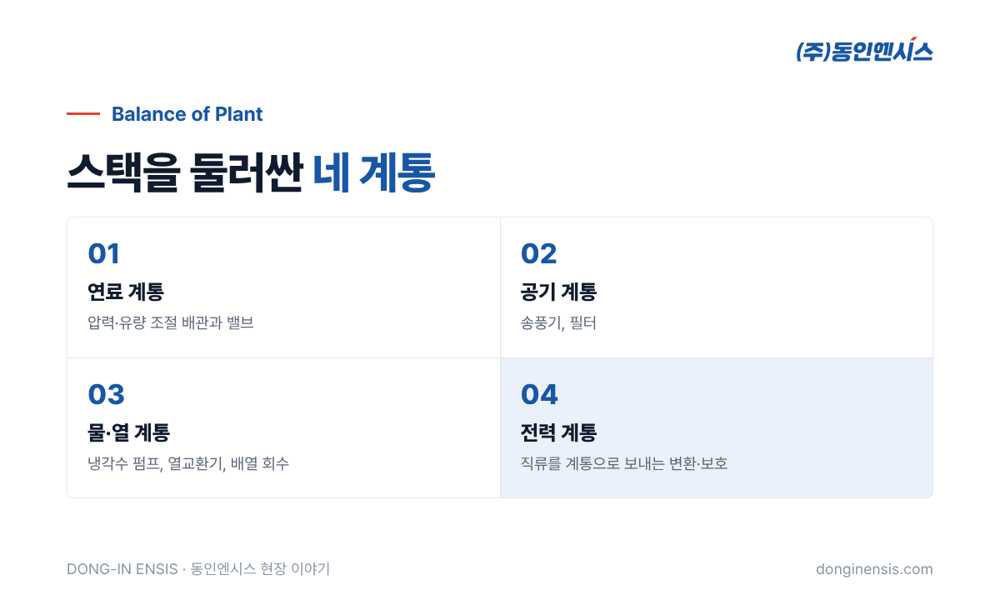
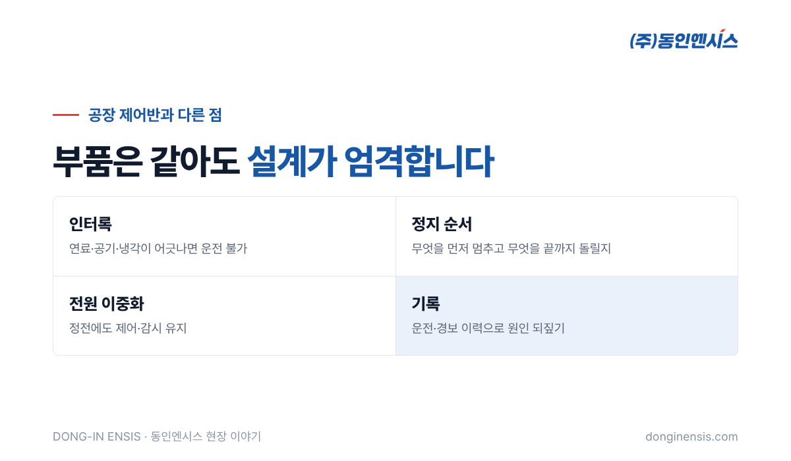

연료전지 발전소 이야기를 하면 대부분 '스택'부터 떠올립니다. 수소와 산소가 만나 전기를 만드는 핵심 장치니까요. 그런데 발전소가 하루 종일 안정적으로 돌아가려면, 스택 바깥에서 연료와 공기, 물과 열을 맞춰 주는 수많은 설비가 함께 움직여야 합니다. 이 설비들을 묶어 BOP라고 부르고, 이들을 조율하는 것이 BOP 제어시스템입니다. 동인엔시스가 연료전지 발전소 CCUS 설비의 BOP 제어시스템을 맡았던 경험을 바탕으로, 자주 받는 질문 일곱 가지에 답해 보겠습니다.
BOP는 Balance of Plant의 줄임말로, 발전소에서 핵심 장치를 뺀 나머지 주변설비를 통틀어 부르는 말입니다. 연료전지 발전소라면 스택을 둘러싼 설비들이 여기에 들어갑니다.
이름은 '주변'이지만, 이 설비 중 하나라도 흔들리면 스택이 제 성능을 내지 못합니다. 그래서 현장에서는 BOP를 발전소의 체력이라고 부르기도 합니다.

한마디로 여러 설비가 같은 박자로 움직이게 만드는 일입니다. 발전량을 올리려면 연료만 더 넣어서는 안 되고, 공기도 그만큼 늘리고, 늘어난 열을 식힐 냉각수 흐름도 맞춰야 합니다. 반대로 발전량을 줄일 때도 순서가 있습니다.
BOP 제어시스템은 PLC를 중심으로 각 설비의 센서 값을 받고, 펌프와 송풍기의 회전속도, 밸브 개도를 조절합니다. 기동과 정지 순서를 지키고, 이상이 생기면 정해진 단계에 따라 설비를 안전하게 멈춥니다. 운영자는 감시 화면에서 전체 상태를 보고 필요한 조작을 합니다.
여기서 중요한 것은 '자동'과 '수동'의 경계입니다. 평상시에는 제어시스템이 정해진 규칙대로 설비를 맞추지만, 점검이나 시험 때는 운영자가 개별 설비를 직접 움직여야 합니다. 어떤 설비를 어느 조건에서 수동으로 돌릴 수 있게 할지, 수동 운전 중에도 지켜야 할 보호 조건은 무엇인지를 설계 단계에서 함께 정해 두어야 현장에서 혼선이 없습니다.
CCUS는 탄소 포집·활용·저장(Carbon Capture, Utilization and Storage)을 뜻합니다. 발전 과정에서 나오는 이산화탄소를 모아 다른 곳에 쓰거나 저장하는 설비입니다.
이 설비가 함께 있으면 제어해야 할 대상이 늘어나는 것은 물론이고, 발전 설비와 포집 설비가 서로 영향을 주고받습니다. 발전량이 바뀌면 배기가스의 양과 성분이 달라지고, 포집 설비는 그 변화에 맞춰 운전 조건을 조정해야 합니다. 두 설비를 따로 보지 않고 하나의 흐름으로 묶어 제어하는 것이 핵심입니다.
동인엔시스는 SK에코플랜트가 진행한 한국남부발전 연료전지 발전소의 CCUS 설비 BOP 제어시스템을 수행했습니다.
기본 부품은 크게 다르지 않습니다. PLC, 인버터, 차단기, 전원 장치처럼 공장 제어반에도 들어가는 것들입니다. 차이는 설계의 엄격함에 있습니다.

발전소 BOP에서 다루는 원리는 공장 설비에도 그대로 통합니다. 펌프와 송풍기의 회전속도를 조절하고, 온도와 압력을 지켜보고, 이상이 생기면 순서대로 멈추고, 그 과정을 기록으로 남기는 일입니다. 규모와 엄격함만 다를 뿐입니다.
부산에 자리한 동인엔시스는 1991년 설립 이후 제어반 설계와 제작 한 길을 걸으며, 배 위의 설비부터 수소충전소, 발전소 주변설비, 공장 라인까지 750건 넘는 현장을 거쳤습니다. SK E&S 액화수소충전소의 제어시스템을 공급했고, 해양수산부 소형 수소추진선박 실증에서도 통합제어와 감시를 맡고 있습니다. 이렇게 까다로운 현장에서 쌓은 인터록과 기록의 습관이 지금 만드는 지능형 제어반의 데이터 신뢰성으로 이어집니다.
Photorealistic photo of the balance-of-plant area of a modern fuel cell power plant in Korea: stainless steel pipes with insulated sections, coolant pumps, heat exchanger, valves with colored handles, neat cable trays, outdoor covered skid under daylight, no people, no brand logos, no readable text. 3:2 landscape.
발주처 입장에서 확인하면 좋은 항목을 정리했습니다.
특히 2번과 3번은 도면만으로는 잘 드러나지 않습니다. 실제 시운전에서 어떤 문제를 겪었고 어떻게 풀었는지 이야기를 들어 보면 경험의 깊이가 보입니다.
Photorealistic photo of a Korean engineer in a white hard hat and navy coverall standing at an open light-grey PLC control cabinet in an electrical room of a power plant, checking wiring with a multimeter, a laptop on a small cart beside him showing abstract green and grey blocks (no readable text), documentary style, cool even lighting, no brand logos, no readable text. 3:2 landscape.
가능합니다. 다만 새로 짓는 현장보다 확인할 것이 많습니다. 운영 중인 설비는 도면과 실제 배선이 달라져 있는 경우가 흔하고, 설비를 오래 멈출 수 없어 교체 시간도 짧게 잡아야 하기 때문입니다.
그래서 순서를 이렇게 잡습니다. 먼저 현장에서 기존 제어반과 배선, 센서 상태를 확인하고 바뀐 부분을 도면에 반영합니다. 그다음 교체 범위를 정하고, 정비 일정에 맞춰 짧은 정지 시간 안에 바꿀 수 있도록 미리 조립과 시험을 마친 제어반을 준비합니다. 교체 뒤에는 단독 시험과 연동 시험을 거쳐 운전을 넘겨 드립니다.
이때 운전 이력과 경보 기록이 남도록 바꿔 두면, 이후 설비 상태를 판단하는 근거가 생깁니다. BOP 제어시스템을 손보는 김에 기록 체계까지 함께 정리하는 것을 권하는 이유입니다.
연료전지 발전소의 주인공은 스택이지만, 발전소를 하루하루 돌아가게 하는 것은 BOP와 그 제어시스템입니다. 보이지 않는 곳에서 설비들의 박자를 맞추는 일, 동인엔시스가 30년 넘게 해 온 일이기도 합니다.
수소·에너지 설비의 제어시스템을 검토 중이라면, 홈페이지의 적용 분야 페이지에서 동인엔시스가 맡아 온 현장을 먼저 살펴보셔도 좋습니다.
상담 051-862-3668 · dongin@donginmne.com
아래 질문 중 하나에 실제 경험으로 답해 본문 적당한 곳에 넣어 주세요. 사람이 직접 쓴 문장이 들어가면 네이버에서 저품질 위험이 줄고 노출에 도움이 됩니다.